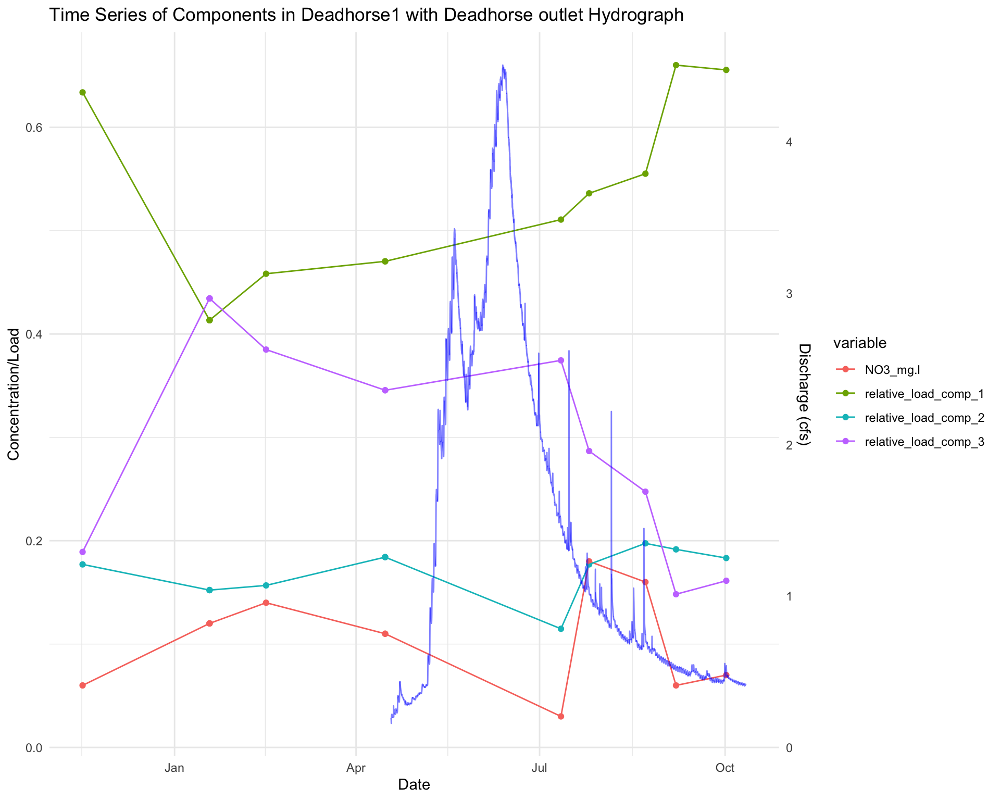
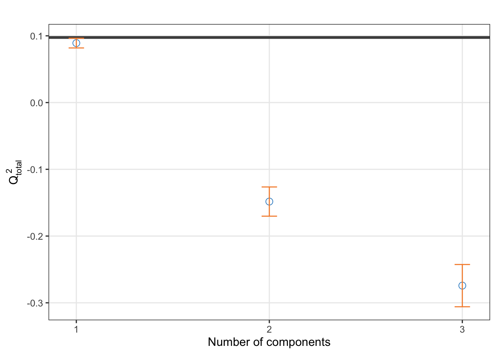
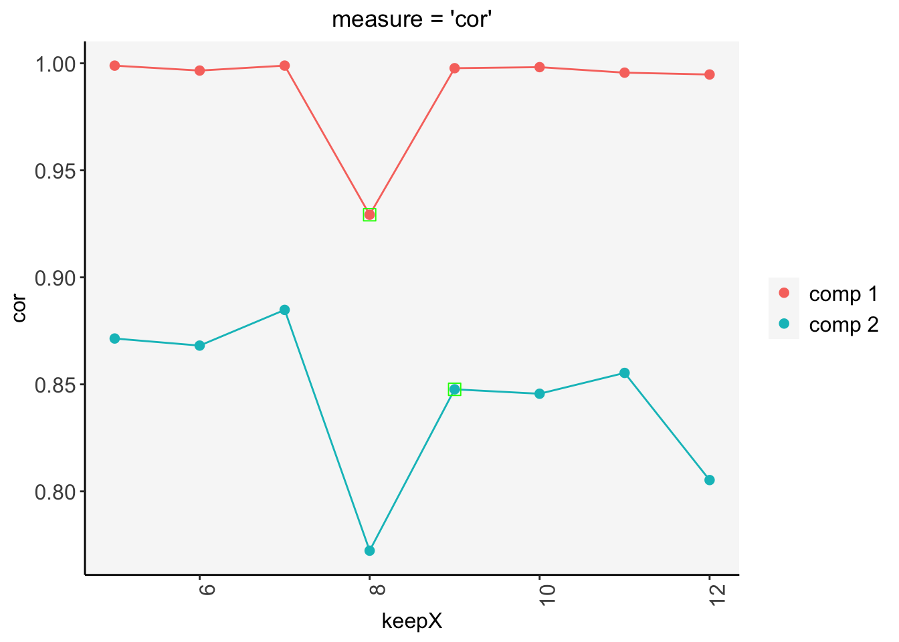
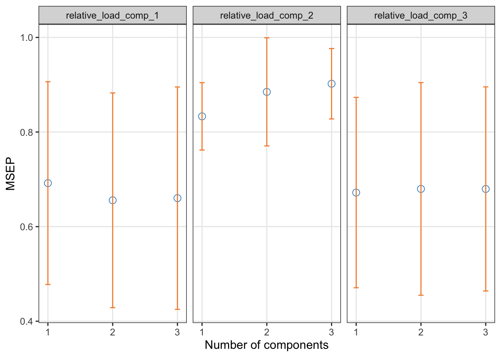
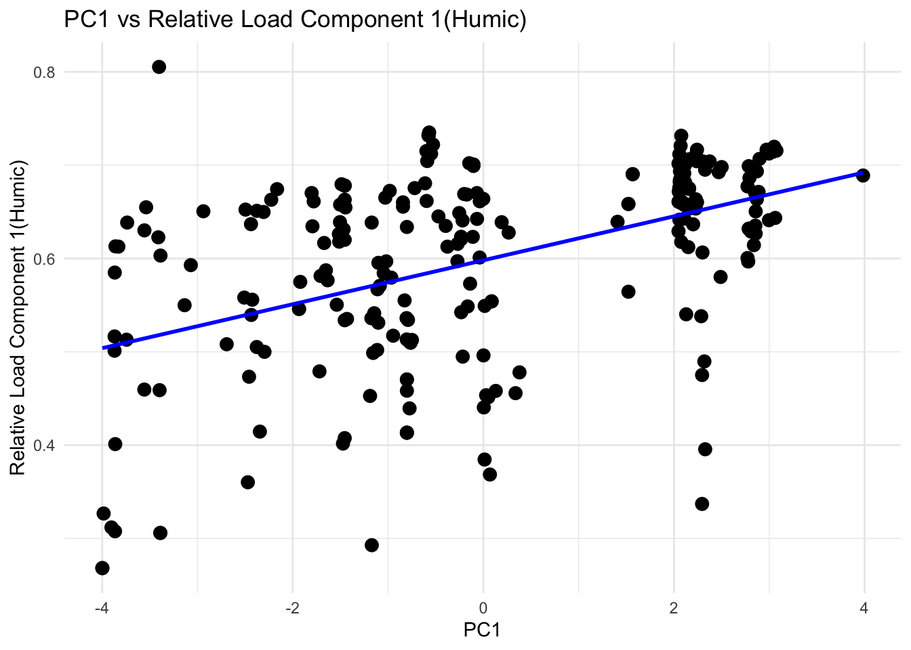
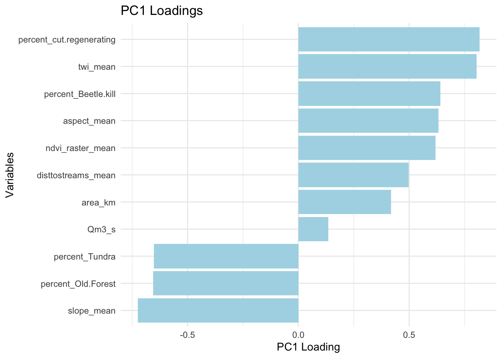

3.3 1. Relative loadings
Relative loadings for each sample (i.e., loading for each component/total loading for the sample in the 3 component model). This tells us how much of each component contributes to the total fluorescence of that particular sample.

3.3.1 Box plots - Relative loadings
- Boxplots are visualizing relative loadings (component loading/total loading for the sample). These are not normalized by DOC concentration. This allows for comparisons between sites with varying DOC concentrations while avoiding the confounding effects of variations in DOC concentration. (i.e., regardless of the overall fluorescence intensity or DOC concentration)
3.3.1.1 Protein-like

Figure 3.1: Figure. Box plots showing the relationships between the sample proportion of PARAFAC component 3 (protein-like) and watershed. dh,dhn and dhs = Deadhorse, fc = Fool Creek. Horizontal bars indicate sample median, asterisks indicate sample mean. Whiskers (vertical lines) extend to the most extreme data point which is no more than range times the interquartile range from the box
3.3.1.2 Humic
Figure 3.2: Figure. Box plots showing the relationships between the sample proportion of PARAFAC component 1 (humic-type) and watershed. dh,dhn and dhs = Deadhorse, fc = Fool Creek
Figure 3.3: Figure. Box plots showing the relationships between the sample proportion of PARAFAC component 2 (humic-type) and watershed. dh,dhn and dhs = Deadhorse, fc = Fool Creek
3.3.2 Distance Correlation matricies
While Pearson’s correlation assumes linear relationships and normal distributions among variables, and Spearman assumptions are that data is monotonic (distribution consistently increases or decreases), most of our data for both response and explanatory variables are skewed or bimodal.
For an initial exploration, we’ll start with a matrix of distance correlations. Distance correlation measures both linear and non-linear associations (unlike Pearson’s) using distances between observations. So we can also use it for continuous or categorical data, and skewed or other non-normal data. A drawback is that we can see dependence between variables, but we wont see the direction or type of dependence…so it might not be intuitive.
Explanatory variable distributions:
Figure 3.4: Figure. Plotting original distribution of response variables
Figure 3.5: Figure. Plotting original distribution of explanatory variables
Explanatory variable distributions:
Figure 3.6: Figure. Plotting original distribution of explanatory variables
Explanatory variable distributions:
Figure 3.7: Figure. Plotting original distribution of explanatory variables
3.3.3 Pearson correlation matrices (scaled data) - Relative loadings
3.3.3.1 All samples with EEMs
If matrices are in a purple gradient, then the plot includes all dates. If green, then the plot represents a subset of dates
By looking at these, we are answering: “How does DOC composition shift with different watershed features?”
3.3.3.1.1 Landcover - all EEMS
Figure 3.8: Figure. Combined plot showing the relationships between relative loadings of 3 PARAFAC components and landcover characteristics for all samples with EEMs data (July 2021- Oct 1, 2022). Color indicates direction and correlation value (Pearson’s). Asterisks indicate level of significance.
This figure indicates that:
- The humic fraction of the fluorescing DOM decreases with high percentages of tundra, and short canopy.
- The humic fraction increases with increasing watershed coverage with forest canopy between 6 and 10m, and increasing landcover classified as cut or regenerating.
- There are low but significant correlations between humic fractions and % catchment coverage by beetle-kill, meadows and old forest. Humic fractions increase slightly with % Beetle Kill and decrease with increased with increased meadow or old forest coverage.
- Protein-like fractions of the fluorescing DOM decrease with high percentages of cut or regenerating forest, and canopy between 6 and 10m,
- but increase with increased coverage by short canopy (<5m) and Tundra.
- Significant but weaker correlations indicate that protein-like fractions increase with increasing meadow and old forest coverage.
3.3.3.1.2 Topo and moisture - all EEMS
Figure 3.9: Figure. Combined plot showing the relationships between relative loadings of 3 PARAFAC components and topographic or moisture characteristics for all samples with EEMs data (July 2021- Oct 1, 2022). Color indicates direction and correlation value (Pearson’s). Asterisks indicate level of significance.
This figure indicates that:
- humic fraction of the fluorescing DOM increase with increasing discharge, watershed area, the distance that allochthonous water travels before reaching the stream channel (dist to streams mean), and increased watershed moisture (as indicated by NDMI and TWI).
- Humic fractions decrease with increasing watershed slope.
- Protein-like fractions of the fluorescing DOM increase with increasing slope
- and decrease with increasing Q, watershed area, increasing moisture indices, and increased mean distance to the stream channel.
3.3.3.1.3 Ions - all EEMS
Figure 3.10: Figure. Combined plot showing the relationships between relative loadings of 3 PARAFAC components and DOC (mg/L), and ions (mg/L) for all samples with EEMs data (July 2021- Oct 1, 2022). Color indicates direction and correlation value (Pearson’s). Asterisks indicate level of significance.
This figure indicates that:
- humic fraction of the fluorescing DOM increase with increasing DOM, sodium, potassium (K) and fluoride (F) concentration).
- Humic fractions decrease with increasing Ca+, Mg, and nitrate (NO3).
- Protein-like fractions of the fluorescing DOM increase with increasing Ca+, Mg, and nitrate (NO3
- and decrease with increasing DOM, sodium, potassium (K) and fluoride (F) concentration).
These correlations suggest that seasonal hydrological fluxes, rather than direct causation, drive changes in humic and protein fractions. Humic fractions are higher during periods of snowmelt and runoff compared to baseflow conditions. Snowmelt leads to elevated DOC as it is ‘flushed’ from the catchments.
Correlations among ions and topographical or landcover features suggest co-correlation rather than causation….

Figure 3.11: Figure. Combined plot showing the relationships between relative loadings of 3 PARAFAC components and DOC (mg/L), and ions (mg/L) for all samples with EEMs data (July 2021- Oct 1, 2022). Color indicates direction and correlation value (Pearson’s). Asterisks indicate level of significance.
3.3.3.2 Summer subset 2022 (mid-June to mid July)
3.3.3.2.1 Landcover - summer 2022
![Figure. Combined plot showing the relationships between relative loadings of 3 PARAFAC components and landcover characteristics for EEMs samples collected between June 10 to July 15, 2022, which includes a synoptic sampling. Color indicates direction and correlation value (Pearson's). Asterisks indicate level of significance. This figure indicates that humic fraction of the fluorescing DOM increase with high percentages of tundra, and short canopy. Protein-like fractions of the fluorescing DOM increase with high percentages of cut or regenerating forest, and canopy between 6 and 10m.](PLS_rendered_book_files/figure-html/unnamed-chunk-26-1.png)
Figure 3.12: Figure. Combined plot showing the relationships between relative loadings of 3 PARAFAC components and landcover characteristics for EEMs samples collected between June 10 to July 15, 2022, which includes a synoptic sampling. Color indicates direction and correlation value (Pearson’s). Asterisks indicate level of significance. This figure indicates that humic fraction of the fluorescing DOM increase with high percentages of tundra, and short canopy. Protein-like fractions of the fluorescing DOM increase with high percentages of cut or regenerating forest, and canopy between 6 and 10m.
3.3.3.2.2 Topography and Moisture
![Figure. Combined plot showing the relationships between relative loadings of 3 PARAFAC components and topographic or moisture characteristics for EEMs samples collected between June 10 to July 15, 2022, which includes a synoptic sampling. Color indicates direction and correlation value (Pearson's). Asterisks indicate level of significance. This figure indicates that **humic** fraction of the fluorescing DOM **increase** with increasing discharge, the distance that allochthonous water travels before reaching the stream channel, and increased watershed moisture. **Humic** fractions **decrease** with watershed slope. **Protein-like** fractions of the fluorescing DOM **increase** with increasing slope and **decrease** with increasing Q, increasing moisture indices, and increased mean distance to the stream channel.](PLS_rendered_book_files/figure-html/unnamed-chunk-27-1.png)
Figure 3.13: Figure. Combined plot showing the relationships between relative loadings of 3 PARAFAC components and topographic or moisture characteristics for EEMs samples collected between June 10 to July 15, 2022, which includes a synoptic sampling. Color indicates direction and correlation value (Pearson’s). Asterisks indicate level of significance. This figure indicates that humic fraction of the fluorescing DOM increase with increasing discharge, the distance that allochthonous water travels before reaching the stream channel, and increased watershed moisture. Humic fractions decrease with watershed slope. Protein-like fractions of the fluorescing DOM increase with increasing slope and decrease with increasing Q, increasing moisture indices, and increased mean distance to the stream channel.
3.3.3.2.3 Ions - summer 2022 (mid-June to mid July)
Figure 3.14: Figure. Combined plot showing the relationships between relative loadings of 3 PARAFAC components and DOC (mg/L), and ions (mg/L) EEMs samples collected between June 10 to July 15, 2022, which includes a synoptic sampling. Color indicates direction and correlation value (Pearson’s). Asterisks indicate level of significance.
3.3.4 Hydrograph - Fool Creek fractions with hydrograph
Figure 3.15: Figure. relative loadings over time from Fool Creek outlet stream site only. Component 1 (humic) appears to increase with discharge while the fraction of Component 2 (humic) and Component 3 (protein-like) decrease during peak flow
3.3.5 Data preparation for multivariate statistical analysis - dimension reduction techniques
So we have a lot of variables, both response and explanatory, so we’ll want to reduce the dimensionality and complexity of the data by using ordination methods that find best fitting components in multi-dimensional space. To decide on a method, we need to understand the relationships among our variables to decide if and how we want to deal with collinearity.
In another workbook (.ipynb), we have seen collinearity between independent variables e.g. (slope and percent_Old.Forest). Multicollinearity can be a problem when fitting regression models as it makes it harder to interpret our coefficients. Using VIF (Variance Inflation Factor) we can explore collinearity between our independent variables.
Interpreting the results:
If the VIF is less than 5, multicollinearity is typically not a concern.
If VIF is between 5 and 10, there may be some moderate multicollinearity.
If VIF is greater than 10, multicollinearity is likely a serious issue, and you may want to consider removing or transforming variables.
3.3.5.1 Multicollinearity
## doc_mg.l na_mg.l nh4_mg.l
## 2.775841 3.681136 1.813084
## K_mg.l Mg_mg.l Ca_mg.l
## 3.200446 5.177041 6.906595
## F_mg.l Cl_mg.l NO3_mg.l
## 1.917985 2.356509 2.269223
## area_km Qm3_s percent_1.5
## 5.283833 1.172452 1948.230940
## percent_6.10 percent_11.15 slope_mean
## 1092.772846 592.763211 7.985253
## aspect_mean ndmi_raster_mean ndvi_raster_mean
## 6.808133 12.712644 6.260448
## disttostreams_mean percent_Beetle.kill percent_Old.Forest
## 4.601496 169.292336 133.702948
## percent_cut.regenerating percent_Tundra distance.to.outlet
## 39.159810 114.338273 10.036870So given that we have a lot of mulitcollinearity, we can systematically remove variables that are non-essential or redundant:
## area_km slope_mean aspect_mean
## 1.821739 3.137001 4.071621
## ndmi_raster_mean ndvi_raster_mean disttostreams_mean
## 4.811914 3.600649 3.860539
## percent_Beetle.kill percent_Old.Forest percent_cut.regenerating
## 84.413534 77.730036 22.383774
## percent_Tundra
## 54.771818But ultimately we have several variables contributing to a high VIF that are all important to our question. Therefore, we can try RDA and PCA as a dimension reduction technique, assuming we remove some of the most redundant variables. This should transform() the predictors into a smaller set of uncorrelated PCs (components) that still explain most of the variance.
3.3.5.2 Distributions and standardization
To perform RDA and PCA, explanatory and response variables must be centered, standardized, transformed or normalized
So these are all quantitative variables with different units and numerical ranges. Standardization transforms the variables so they have a mean of zero and a standard deviation of one.
Let’s view the scaled distributions of standardized explanatory variables:Figure 3.16: Figure. Checking out the distribution of explanatory variables
Figure 3.17: Figure. Checking out the distribution of response variables
Our response variables are both right and left-skewed unimodal. We may need to make the data more symmetrical or approximately normal, This can ensure that they contribute equally to the analysis and RDA assumes linear relationships between variables. But these may be be close enough to approximately normal once they are standardized/z-scored (subtracts the mean and divides by the standard deviation for each variable):

The scales are similar, the units are the same. Let’s move forward for now.
Initial exploration with PCA Q² evaluates how well the model can predict unseen data based on the selected number of components. A higher Q² value indicates better predictive performance. Commonly, a Q² value greater than 0.095 is considered an acceptable threshold for a good predictive model.

None of our components have Q² total greater than 0.095. This suggests that the PLS model may not have enough predictive power to explain the relationship between the response variables and explanatory variables, based on cross-validation.
We know the relationships between individual response variables and explanatory variables are strong. PLS does not assume normality of the data, though scaling does seem to help the Q2.
From the tutorial: “We now set a grid of values - thin at the start, but also restricted to a small number of genes for a parsimonious model, which we will test for each of the two components in the tune.spls() function, using the MAE criterion.” So, in simpler terms, I think this means this piece of code is tuning a partial least squares (PLS) regression model using cross-validation to find the best number of variables to include in the model. I want to include all response variables at this point, so this is adapted from the tutorial:
## Warning: <anonymous>: ... may be used in an incorrect context:
## spls(X = X, Y = Y, keepX = c(choice.keepX, keepX), keepY = c(choice.keepY,
## keepY), ncomp = comp, mode = mode, ...)
## Warning: <anonymous>: ... may be used in an incorrect context:
## spls(X = X, Y = Y, keepX = c(choice.keepX, keepX), keepY = c(choice.keepY,
## keepY), ncomp = comp, mode = mode, ...)
## Importance of components:
## PC1 PC2 PC3 PC4 PC5 PC6 PC7
## Standard deviation 2.1860 1.4916 1.3046 1.1224 0.91363 0.68046 0.6681
## Proportion of Variance 0.3982 0.1854 0.1418 0.1050 0.06956 0.03859 0.0372
## Cumulative Proportion 0.3982 0.5836 0.7254 0.8304 0.89997 0.93856 0.9758
## PC8 PC9 PC10 PC11 PC12
## Standard deviation 0.36959 0.3305 0.18584 0.10306 8.348e-11
## Proportion of Variance 0.01138 0.0091 0.00288 0.00089 0.000e+00
## Cumulative Proportion 0.98714 0.9962 0.99911 1.00000 1.000e+00## Warning: The SGCCA algorithm did not converge
3.3.6 RDA (Redundancy Analysis)
https://r.qcbs.ca/workshop10/book-en/redundancy-analysis.html Similar to PCA, but RDA is a constrained method that requries two datasets, one for response variables (e.g., PARAFAC component fractions) and one for explanatory variables (watershed characteristics)
RDA identifies the portion of the variation in the response dataset that can be explained by the explanatory variables. So this tells us how much of the variability in the response variables is explained by the predictors.
3.3.6.3 Summer synoptic:
Shows entire workflow to derive best fitting RDA
##
## Call:
## rda(formula = standardized_resp ~ aspect_mean + twi_mean + ndvi_raster_mean + disttostreams_mean + percent_Beetle.kill + percent_Old.Forest + percent_cut.regenerating + area_km + Qm3_s, data = explanatory_standardized, na.action = na.exclude)
##
## Partitioning of variance:
## Inertia Proportion
## Total 3.0000 1.0000
## Constrained 2.1704 0.7235
## Unconstrained 0.8296 0.2765
##
## Eigenvalues, and their contribution to the variance
##
## Importance of components:
## RDA1 RDA2 PC1 PC2
## Eigenvalue 2.0177 0.15266 0.5835 0.24610
## Proportion Explained 0.6726 0.05089 0.1945 0.08203
## Cumulative Proportion 0.6726 0.72347 0.9180 1.00000
##
## Accumulated constrained eigenvalues
## Importance of components:
## RDA1 RDA2
## Eigenvalue 2.0177 0.15266
## Proportion Explained 0.9297 0.07034
## Cumulative Proportion 0.9297 1.00000Significance testing:
## Permutation test for rda under reduced model
## Permutation: free
## Number of permutations: 999
##
## Model: rda(formula = standardized_resp ~ aspect_mean + twi_mean + ndvi_raster_mean + disttostreams_mean + percent_Beetle.kill + percent_Old.Forest + percent_cut.regenerating + area_km + Qm3_s, data = explanatory_standardized, na.action = na.exclude)
## Df Variance F Pr(>F)
## Model 9 2.17041 8.7208 0.001 ***
## Residual 30 0.82959
## ---
## Signif. codes: 0 '***' 0.001 '**' 0.01 '*' 0.05 '.' 0.1 ' ' 1We can also test the significance of each canonical axis with by = “axis”. Recall that these axes represent the variation in explanatory variables in fewer dimensions.
## Permutation test for rda under reduced model
## Forward tests for axes
## Permutation: free
## Number of permutations: 999
##
## Model: rda(formula = standardized_resp ~ aspect_mean + twi_mean + ndvi_raster_mean + disttostreams_mean + percent_Beetle.kill + percent_Old.Forest + percent_cut.regenerating + area_km + Qm3_s, data = explanatory_standardized, na.action = na.exclude)
## Df Variance F Pr(>F)
## RDA1 1 2.01775 89.9920 0.001 ***
## RDA2 1 0.15266 6.8087 0.775
## Residual 37 0.82959
## ---
## Signif. codes: 0 '***' 0.001 '**' 0.01 '*' 0.05 '.' 0.1 ' ' 1or we can test the significance of each variable:
## Permutation test for rda under reduced model
## Terms added sequentially (first to last)
## Permutation: free
## Number of permutations: 999
##
## Model: rda(formula = standardized_resp ~ aspect_mean + twi_mean + ndvi_raster_mean + disttostreams_mean + percent_Beetle.kill + percent_Old.Forest + percent_cut.regenerating + area_km + Qm3_s, data = explanatory_standardized, na.action = na.exclude)
## Df Variance F Pr(>F)
## aspect_mean 1 0.09478 3.4274 0.059 .
## twi_mean 1 1.06887 38.6529 0.001 ***
## ndvi_raster_mean 1 0.20600 7.4496 0.011 *
## disttostreams_mean 1 0.43123 15.5942 0.001 ***
## percent_Beetle.kill 1 0.01110 0.4013 0.634
## percent_Old.Forest 1 0.21447 7.7558 0.007 **
## percent_cut.regenerating 1 0.00007 0.0025 0.994
## area_km 1 0.10385 3.7556 0.062 .
## Qm3_s 1 0.04004 1.4478 0.248
## Residual 30 0.82959
## ---
## Signif. codes: 0 '***' 0.001 '**' 0.01 '*' 0.05 '.' 0.1 ' ' 1A variable may appear to have a strong influence or a high loading but not be statistically significant. This could be due to the variable being strongly correlated with the main gradient in the data but lacking statistical robustness (due to multicollinearity?). Variables like this might capture major trends in the data but don’t significantly improve the fit of the model when tested. This could mean that they are redundant or that the sample size is too small to detect their significance.
Less influential but statistically significant means they account for a relatively small but non-random portion of the total variation. Might not be the primary drivers of variation, but they can be still be important to our understanding of secondary influences/trends.

Figure 3.18: Figure. RDA1 loadings tell us the direction and strength between each explantory variable and the RDA1 component.

Interpreting loadings for RDA1:
Recall that there are three response variables here, each will have a loading that indicates its correlation with RDA1. Humic components 1 and 2 will have similar loadings (positive and negative) on RDA1, where the protein-like component will have the opposite loading. In the biplot, this should be visible as response variable vectors pointing in opposite directions.
Figure 3.19: Figure. RDA biplot
3.3.7 PCA - All data
Figure 3.20: Figure.
## Eigenvalue Variance_Explained Cumulative_Variance
## comp 1 4.333422113 39.39474648 39.39475
## comp 2 1.889171786 17.17428896 56.56904
## comp 3 1.576675692 14.33341538 70.90245
## comp 4 0.905617183 8.23288348 79.13533
## comp 5 0.764863096 6.95330087 86.08864
## comp 6 0.662940684 6.02673349 92.11537
## comp 7 0.435009130 3.95462845 96.07000
## comp 8 0.225979827 2.05436207 98.12436
## comp 9 0.149856401 1.36233092 99.48669
## comp 10 0.052256648 0.47506044 99.96175
## comp 11 0.004207441 0.03824946 100.00000Although PC1 and PC2 explain a lot of the variance and most pubs focus on these, PC3 contributes a non-trivial amount of variance (14%). Together, the first three components explain the majority of the total variance, which (I think) is a better threshold for interpretation than <50%. Let’s see.
Visualize the PC1 loadings to see what our important drivers are:

In this case, PC1 might represent a gradient related to DOC lability or stability across the landscape (e.g., a transition from microbial activity-driven DOC production in low slopes, southern aspects, more moist sub-watersheds, to more labile DOC driven by hydrological transport in older forests due to higher slopes, northern aspects and drier sub-watersheds. Subwatersheds with older forests tend to be on higher slopes, northern aspects, which receive less solar radiation (cooler, less microbial activity). These also retain snow for longer, sustaining humic inputs through the falling limb (we might see this in Lexen)? A lot more detail is applied to this below.
…BUT, PCA is unsupervised and doesn’t directly consider the response variable. So how well does PC1 explain the variability of the first PARAFAC component (humic)?.
Let’s look at PC1 in 2-D space by plotting it against our response variable to see how PC1 correlates with the sample fraction of Humic Component1. We can get a sense of the strength and direction of the relationship:
 Meh.
Explore correlations between the first 3 PCs and the response variable:
## [,1]
## Dim.1 0.4658502
## Dim.2 -0.1603960
## Dim.3 0.1620947Lets fit a linear model with the first few components as predictors:
##
## Call:
## lm(formula = relative_load_comp_1 ~ Dim.1 + Dim.2 + Dim.3, data = pca_scores)
##
## Residuals:
## Min 1Q Median 3Q Max
## -0.30807 -0.03691 0.01565 0.05362 0.31392
##
## Coefficients:
## Estimate Std. Error t value Pr(>|t|)
## (Intercept) 0.597820 0.005864 101.950 < 2e-16 ***
## Dim.1 0.023529 0.002817 8.353 5.81e-15 ***
## Dim.2 -0.012269 0.004266 -2.876 0.00440 **
## Dim.3 0.013573 0.004670 2.906 0.00401 **
## ---
## Signif. codes: 0 '***' 0.001 '**' 0.01 '*' 0.05 '.' 0.1 ' ' 1
##
## Residual standard error: 0.09065 on 235 degrees of freedom
## Multiple R-squared: 0.269, Adjusted R-squared: 0.2597
## F-statistic: 28.83 on 3 and 235 DF, p-value: 6.572e-16Conclusions Component1: The small coefficients, combined with the relatively low R-squared value, suggest that even though the relationships are significant, they might not be strong enough to drive substantial changes in relative_load_comp_1. I can increase the amount of variability by remove more variables from the PCA, but this still does not drastically improve the relationship between PC1 and PARAFAC component 1.
Let’s look at Components 2 and 3 in the same fashion. It could be that Component 1 is driven by the fractions of 2 and 3…?
COMPONENT 2

Explore correlations between the first 3 PCs and the response variable:
## [,1]
## Dim.1 0.46403738
## Dim.2 -0.04860088
## Dim.3 0.31799194Lets fit a linear model with the first few components as predictors:
##
## Call:
## lm(formula = relative_load_comp_2 ~ Dim.1 + Dim.2 + Dim.3, data = pca_scores)
##
## Residuals:
## Min 1Q Median 3Q Max
## -0.12203 -0.01497 0.00452 0.02420 0.07025
##
## Coefficients:
## Estimate Std. Error t value Pr(>|t|)
## (Intercept) 0.185885 0.002194 84.709 < 2e-16 ***
## Dim.1 0.009086 0.001054 8.619 1.01e-15 ***
## Dim.2 -0.001441 0.001597 -0.903 0.368
## Dim.3 0.010322 0.001748 5.906 1.22e-08 ***
## ---
## Signif. codes: 0 '***' 0.001 '**' 0.01 '*' 0.05 '.' 0.1 ' ' 1
##
## Residual standard error: 0.03392 on 235 degrees of freedom
## Multiple R-squared: 0.3188, Adjusted R-squared: 0.3101
## F-statistic: 36.66 on 3 and 235 DF, p-value: < 2.2e-16COMPONENT 3

Explore correlations between the first 3 PCs and the response variable:
## [,1]
## Dim.1 -0.4975613
## Dim.2 0.1381072
## Dim.3 -0.2198842Lets fit a linear model with the first few components as predictors:
##
## Call:
## lm(formula = relative_load_comp_3 ~ Dim.1 + Dim.2 + Dim.3, data = pca_scores)
##
## Residuals:
## Min 1Q Median 3Q Max
## -0.29212 -0.06541 -0.02312 0.04213 0.39494
##
## Coefficients:
## Estimate Std. Error t value Pr(>|t|)
## (Intercept) 0.216295 0.007367 29.360 < 2e-16 ***
## Dim.1 -0.032614 0.003539 -9.216 < 2e-16 ***
## Dim.2 0.013711 0.005360 2.558 0.0112 *
## Dim.3 -0.023894 0.005867 -4.073 6.36e-05 ***
## ---
## Signif. codes: 0 '***' 0.001 '**' 0.01 '*' 0.05 '.' 0.1 ' ' 1
##
## Residual standard error: 0.1139 on 235 degrees of freedom
## Multiple R-squared: 0.315, Adjusted R-squared: 0.3062
## F-statistic: 36.02 on 3 and 235 DF, p-value: < 2.2e-16Not surprisingly, the coefficients are similar among humic components and while similar in absolute value, opposite for the protein-like component.
Save this:
Interpreting loadings for PC1:
Negative Loadings
Examples, clarifications:
percent_Old.Forest as measured by a landcover classificaiton model (hand corrected Random Forest)
percent_11.15 is the percent of the each subwatershed containing by forest btwn 11 and 15m tall as measured pixel counts of the canopy height model. These trees are ‘old’ but not the rare ancients found in the riparian valley.
A negative loading in PC1 means that higher values of these variables are associated with lower values of the principal component (PC1), which ‘represents a particular combination of the variation explained by the dataset’ or in my words, a regression line that best fits the multidimensional space created by all of the variables. I think this means these are related to reduced Component1 fractions. Again, this is counter to Fegel results and the logic that the older forests would contain more recalcitrant sources of DOC. However, higher slopes and more tundra-covered areas also may negatively influence Component 1 humic fractions. This makes sense, as DOM is likely hydrologically transported faster in these conditions, with less time or material for microbial activity, transporting DOC while it is still labile.
Positive Loadings:
On the other hand, positive loadings mean that higher values of these variables contribute positively to PC1.
Top examples, clarification:
aspect higher aspect values (180 to 270) represent south and west aspects, 0-90 represent north and east. Previous studies that conclude that microbial decomposition of soil organic matter and enzyme activities associated with soil C, N, and P cycling increased with increasing temperature: Liu et al 2021 in Effects of natural vegetation restoration on DOM..and they cite: Min et al., 2019; Nazaries et al., 2015; Pang et al., 2015.
disttostreams_mean is derived from a whitebox raster that calculates the downslope distance to the nearest downslope stream cell. This is assumed to give us a relative idea of the retention time of allochthonous water. Larger distances to the stream mean potentially more time for microbial activity to improve recalcitrance before DOM enters the stream channel.
percent_cut.regenerating is the percent of subwatershed area covered by ‘cut’ plots. Thse are potentially areas of ‘newer’ forests, and in Deadhorse, many of these appear similar to meadows. We might expect a decreased humic component with regenerating forest as they can have lower litter production, shallow root systems, leading to decreased input of humic subtances (notes from a Tim meeting). However, we might be at an older stage of succession at this point (40+ years post harvest at this point). Roots are deeper, litter and deadwood has likely had time to accumulate in these plots. This can enhance complex, recalcitrant carbon compounds, like our humic Component1.
percent_Beetle.kill Similar to above, beetle kill leaves the deadwood of old trees in place. We might expect these to be a source of recalcitrant carbon. TWI is arguably important in the fraction of humic components. Like distancetostreams, is likely an indication of the allochthonous water retention. In other words, increased water retention in areas with higher wetness indices, where DOM originating from surrounding soils (allochthonous DOM) can remain for extended periods may allow for greater microbial processing of DOM, leading to the accumulation of more recalcitrant, humic Components before the DOM is transported into the stream channel.